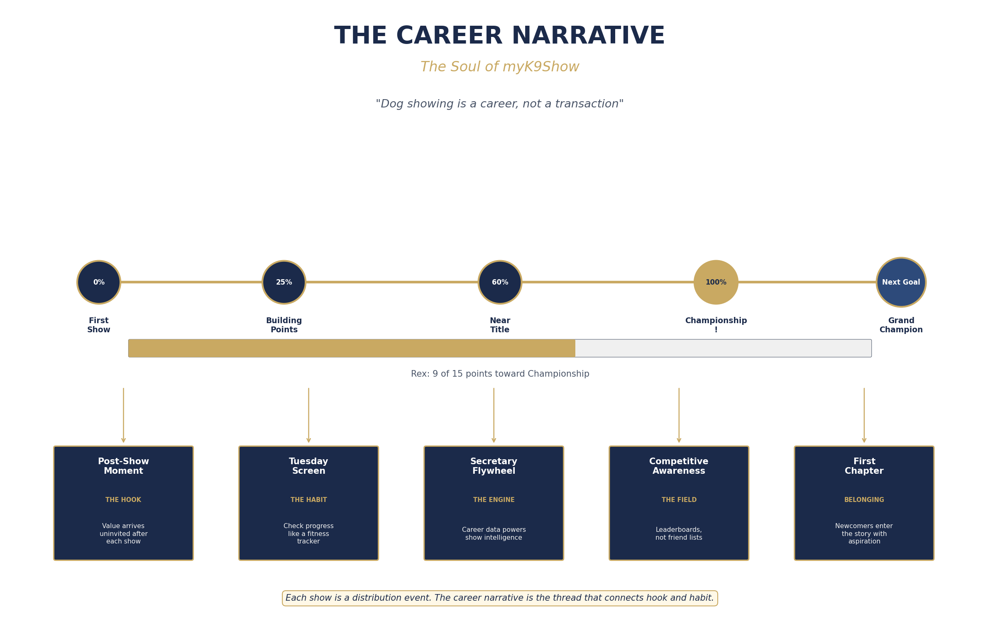
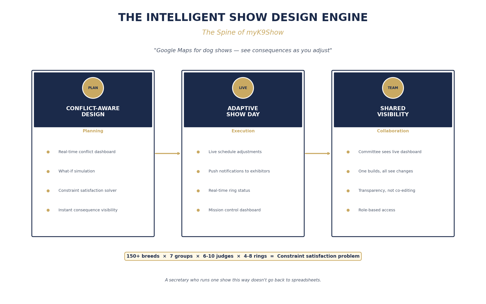
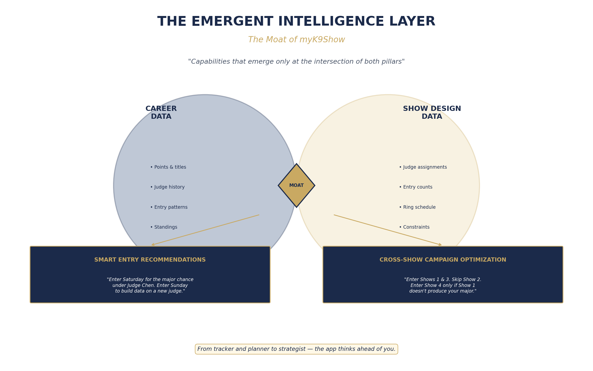

"Dog showing is a career, not a transaction."
myK9Show does the work you were going to do anyway, but better, faster, and with insights you couldn't generate yourself. The app knows what you're trying to accomplish and helps you get there.
The session produced a three-layer architecture. These are not three features. They are three aspects of one integrated product, described through the metaphor the session itself developed: soul, spine, and moat.
The Soul
Why exhibitors open the app when there's no show to manage. Tracks each dog's show career as a continuous story — progress toward titles, results history, judge performance, and competitive standing.
The Spine
Why secretaries can't go back to spreadsheets. Treats show scheduling as the constraint-satisfaction problem it actually is, with real-time conflict detection and adaptive day-of management.
The Moat
What competitors can't replicate by building either pillar alone. When career data and show design data share a platform, capabilities emerge that neither system could produce independently.
myK9Show tracks each dog's show career as a continuous story — progress toward titles, results history, judge performance, and competitive standing. The app makes visible what exhibitors already track in their heads and notebooks, and adds strategic intelligence they couldn't generate themselves.
After a show, exhibitors automatically receive a career update: "Rex earned 2 points today. He now has 13 of 15 toward his Championship." Value arrives uninvited. Each show becomes a distribution event — the primary acquisition mechanism.
Between shows, the app shows progress bars toward titles, strategic show recommendations, and judge history. This is the fitness tracker energy: you open it because you want to see the number. The habit loop that keeps people coming back.
Exhibitor career data powers predictive entry intelligence for secretaries. "If 40 exhibitors within driving distance are 1–2 points from a major, you can predict entry counts with scary accuracy." Each side's engagement makes the other's experience better.
Leaderboards and standings, not friend lists and feeds. The tournament bracket, not the social network. "#1 Golden Retriever in the region just entered the same show as you." The app makes the competition visible.
For novices, the emotional hook is belonging, not progress. "Cooper: 1 show, 0 points. Chapter 1 of many." The career narrative begins with aspiration and contextual guidance — the mentor every newcomer wishes they had.

The Career Narrative: hook, habit, and flywheel working as one system
A typical all-breed show has 150–200+ breeds, 7 groups, 6–10 judges, 4–8 rings — with cascading constraints that secretaries currently manage by hand. The show design engine makes this complexity visible and solvable. It's Google Maps for dog shows: you don't plan a route and then check if it works; you see it updating as you adjust.
A real-time dashboard showing all conflicts — judge overlaps, exhibitor time gaps, ring collisions, venue constraints — that updates instantly as changes are made. Combined with what-if simulation: "What happens if Judge Smith cancels?" The secretary answers in seconds questions that currently take hours.
Show day never goes according to plan. The schedule is alive: when a breed finishes early or a judge runs late, the system adjusts downstream and pushes updates to exhibitors' phones. "Ring 3 is running 15 minutes ahead. Your breed has been moved up. Updated time: 2:15pm."
Show committees need transparency, not simultaneous editing. The show chair, superintendent, and chief ring steward all see the same live dashboard — current schedule, recent changes, active conflicts. One person builds; the committee sees. Nobody has to ask "where are we?"

The Show Design Engine: from planning through execution to collaboration
When career data and show design data share a platform, capabilities emerge that neither system could produce independently. The app transitions from tracker and planner to strategist.
Combines career state with show structural data: "The Riverside cluster has Judge Chen on Saturday. You've done well under Chen — 1st, 2nd. Saturday entries suggest a probable major. Enter Saturday for the major chance. Enter Sunday to build data on a new judge." This is the advice an experienced handler gives over coffee — available to everyone, all the time.
"Springfield cluster — 4 shows over 2 days. Enter Shows 1 and 3 for best major probability. Skip Show 2. Enter Show 4 only if Show 1 doesn't produce your major." You're not managing individual shows — you're managing a campaign. The app makes cluster strategy data-driven.

The Intelligence Layer: where career data meets show data to produce strategic insight
The three moves form a reinforcing system, not a feature list. One data model, three experiences. That's why this is a platform, not a collection of features.
The career narrative creates exhibitor engagement. That engagement produces data. That data flows into the show design engine, giving secretaries predictive intelligence. Better shows attract more exhibitors. The cycle accelerates.
The free tier is not a loss leader — it is the data acquisition layer. Free usage creates the network effects that premium users pay to leverage.
Free forever
Everything that creates data or drives the flywheel.
~$9.99–14.99/month or ~$99–149/year
The free tier tells you where you are. Premium tells you where to go.
~$99–299 per show
Per-show pricing: lower trial barrier, every show is a revenue and distribution event.
Deliberate boundaries that keep the vision focused.
Tensions the session identified but intentionally left unresolved.
Entry forms contain email addresses. But the first unsolicited contact needs to feel like a gift, not spam. The exact content, timing, and tone of this first touch determines whether the acquisition model works or creates backlash. This is a design problem with regulatory implications.
If some shows use myK9Show and others don't, career pictures have gaps. The app needs to either import historical results from external sources or handle partial data gracefully. The gap between the promise and early reality is a critical UX challenge.
If the engine produces schedules that experienced secretaries find obviously suboptimal, trust is damaged rather than built. The minimum viable intelligence level needs definition.
Smart Entry Recommendations require data from multiple shows and many exhibitors. Below some threshold, recommendations will be unreliable. What's that threshold, and how does the app provide value during the growth phase?
The conflict dashboard being free could cannibalize professional tier value. The line between "free conflict visibility" and "premium what-if simulation" needs precise definition. Per-show pricing tiers and subscription transition triggers need market testing.
Territory the session identified but didn't enter.
Professional handlers manage multiple dogs for multiple owners. The career narrative maps naturally to "manage your roster" but handler-specific needs weren't explored.
Obedience, agility, rally have different career structures, title paths, and competitive dynamics. The framework should extend but wasn't tested against them.
Different registries (AKC, KC, FCI) with different point systems and title structures. The career narrative assumes AKC-style progression. International extension is unscoped.
InfoDog, ShowEdge, and other tools handle entry processing. How myK9Show coexists with or replaces existing infrastructure during transition was identified but not resolved.
How the platform bootstraps career data for exhibitors who join after years of showing. AKC data import, manual entry, third-party sources — this infrastructure question remains open.